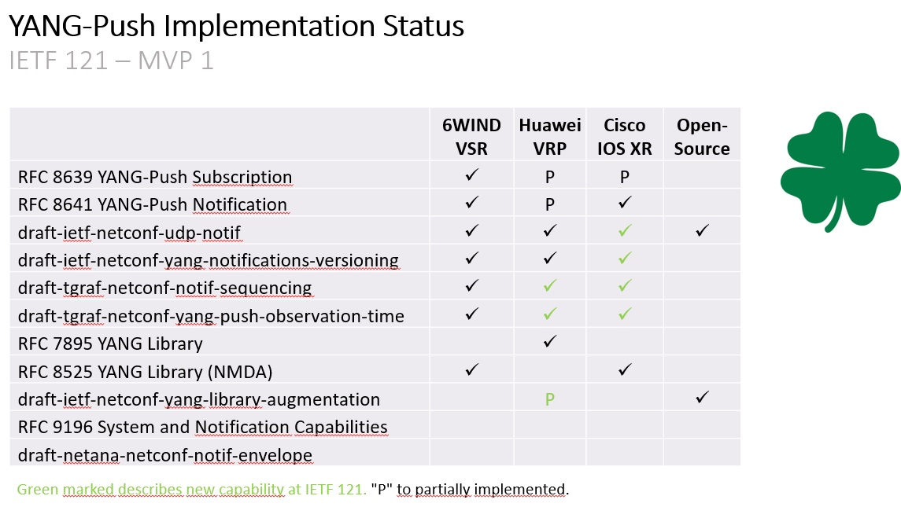

July 19-25th 2025 · IETF 123 in Madrid
The IETF Hackathon is held on the weekend of July 19/20th with the project "Validate Configured Subscription YANG-Push Publisher Implementations". Multiple YANG-Push implementations will be tested in context of subscription automation, message validation and Message Broker integration.
The Demo How to Use YANG-Push MVP 1 with Message Broker Integration is held on Friday July 25th 09:30 - 10:30 CET where we demo 4 YANG-Push vendor implementation with the test automation we developed at the IETF hackathons. Demonstrate how YANG-Push transport and subscription capabilities can be discovered and subscribed. How YANG module dependencies for subscriptions are being discovered and YANG modules for YANG schema tree validation can be obtained and notification can be validated draft-netana-nmop-yang-anydata-validation. And last but not least how the data collection ads metadata draft-ietf-nmop-message-broker-telemetry-message. The public side meeting will be recorded and shared here on this website.
The IETF NMOP working group sessions are held on July 21/23th. Besides the hackathon tests results on YANG-Push implementations, updates on draft-ietf-nmop-message-broker-telemetry-message and draft-netana-nmop-yang-anydata-validation is going to be discussed. The documents aim to standardize message schema in the Message Broker integrations and how to validate anydata relevant for YANG-Push subsribed data.
The IETF NETCONF working group session is held on July 24th. Main discussions are wherever draft-ietf-netconf-notif-envelope should be enabled globally or per subscription.
March 15-21th 2025 · IETF 122 in Bangkok
The IETF Hackathon is held on the weekend of March 15/16th with the project "Validate Configured Subscription YANG-Push Publisher Implementations". Multiple YANG-Push implementations will be tested in context of interoparability and Message Broker integration.
The IETF NMOP working group sessions are held on March 17/18th. Besides the hackathon tests results on YANG-Push implementations, draft-netana-message-broker-telemetry-message is going to be introduced and discussed. The document aims to standardize message schema in the Message Broker integrations.
The IETF NETCONF working group session is held on March 18th. draft-ietf-netconf-udp-notif and draft-ietf-netconf-distributed-notif concluded working group last call. draft-ietf-netconf-notif-envelope and draft-ietf-netconf-yp-transport-capabilities working group adoption calls concluded. Changes and next steps will discussed.
March 13th 2025 · BBF Spring Meeting in Hong Kong · WT-508 Discussion
The Broadband Forum Automated Intelligent Management (AIM) is going to hold an informal lunch meeting on Broadband Network Data Collection (BNDC) and YANG-Push to Message Broker Integration at the Broadband Forum Spring meeting in Hong Kong on March 13th 12:30 - 13:30 HKT. We are going to share the summary and conclusion on the joint interim meeting from February 26th to the interested Broadband Forum colleagues and facilitate exchange on future collaborations.
February 26th 2025 · BBF AIM/IETF NMOP Joint Interim
The Broadband Forum Automated Intelligent Management (AIM) and IETF Network Management Operations (NMOP) established a joint liaison on Broadband Network Data Collection (BNDC) and YANG-Push to Message Broker Integration in January 2025. Following on the liaison, a joint interim at IETF was held where both architectures and a comparison with proposed next steps was presented.
An Architecture for YANG-Push to Message Broker Integration
An Architecture for Broadband Network Data Collection WT-508 and YANG-Push to Message Broker ComparisonFebruary 10th 2025 · IETF NETCONF/NMOP Joint Interim
The IETF Network Configuration (NETCONF) and Network Management Operations (NMOP) established a held a joint interim on advancing YANG-Push to Message Broker Integration related documents in the area of Notifications, Capabilities for Systems and Datastore Update Notifications and YANG-Push simplification.
An Architecture for YANG-Push to Message Broker Integration
Extensible YANG Model for YANG-Push Notifications YANG Notification Transport Capabilities IETF YANG-Push LiteNovember 2/3rd 2024 · IETF 121 Hackathon
The IETF 121 Hackathon was held on the weekend of November 2/3rd with the project "Validate Configured Subscription YANG-Push Publisher Implementations". Multiple YANG-Push implementations were tested in context of interoparability and Message Broker integration.
Validate Configured Subscription YANG-Push Publisher Implementations
